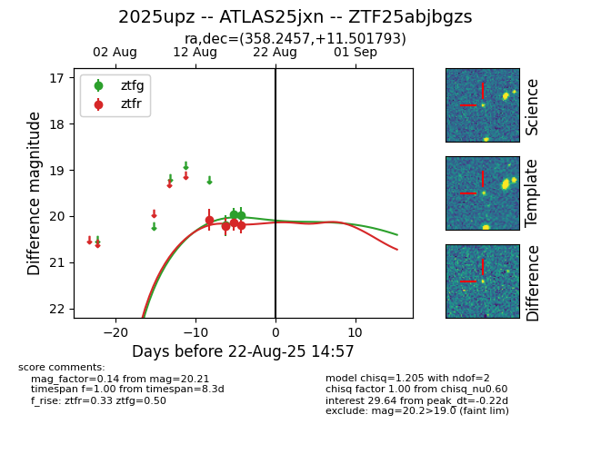

Target 2025upz at 2025-08-21 11:20, see:
FINK: fink-portal.org/ZTF25abjbgzs
Lasair: lasair-ztf.lsst.ac.uk/objects/ZTF25abjbgzs
ALeRCE: alerce.online/object/ZTF25abjbgzs
TNS: wis-tns.org/object/2025upz
YSE: ziggy.ucolick.org/yse/transient_detail/2025upz
alt names
ZTF25abjbgzs (ztf,alerce)
2025upz (tns,yse)
ATLAS25jxn (atlas)
coordinates:
equatorial (ra, dec) = (358.2457,+11.50179)
galactic (l, b) = (100.8636,-48.84909)
photometry
last ztfg=19.99, ztfr=20.21
3 ztfg, 4 ztfr detections
